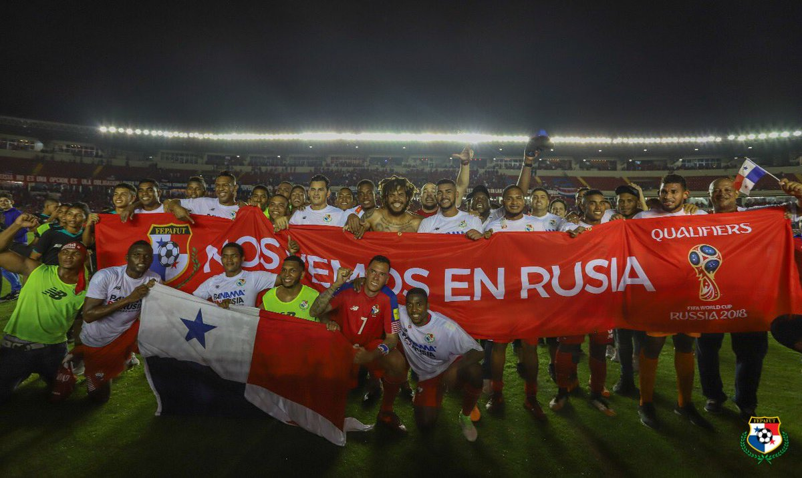

Islandia clasificó por primera vez a un mundial mayor masculino.

La alegría se apodero del Romel Fernandez, al lograr Panamá clasificar por primera ocación a un mundial mayor masculino de futbol.
| Resumen UEFA |
Chile eliminado |
|
|
|
Equipos clasificados a Rusia 2018
| ÁFRICA: |
Egipto - |
Nigeria |
| ASIA: |
Arabia Saudí - |
Irán - |
Japón |
| EUROPA: |
Alemania - |
Bélgica - |
España - |
Francia - |
Inglaterra - |
Islandia - |
Polonia - |
Portugal - |
Rusia - |
Serbia |
| CENTRO AMÉRICA Y CARIBE: |
Costa Rica - |
México - |
Panamá |
| SUDAMÉRICA: |
Argentina - |
Brasil - |
Colombia - |
Uruguay |